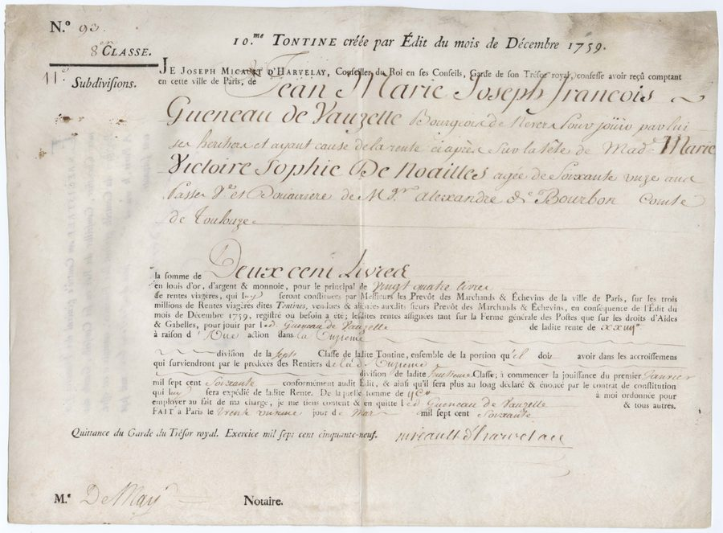
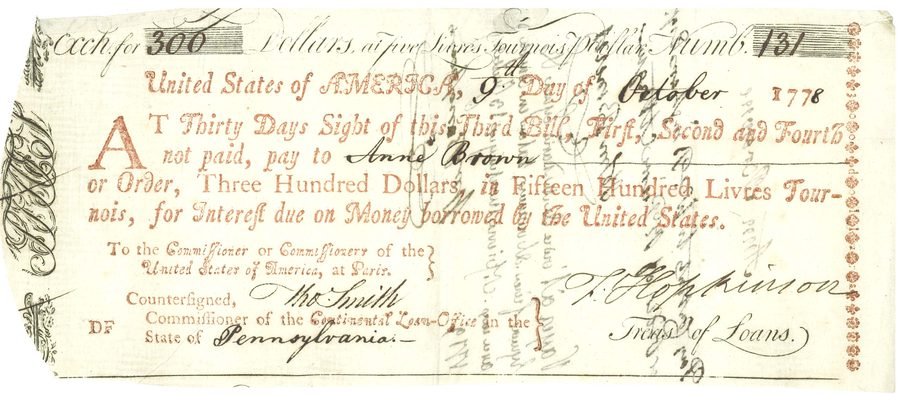
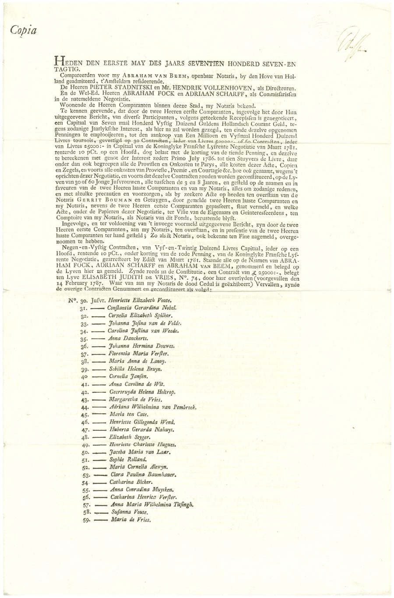
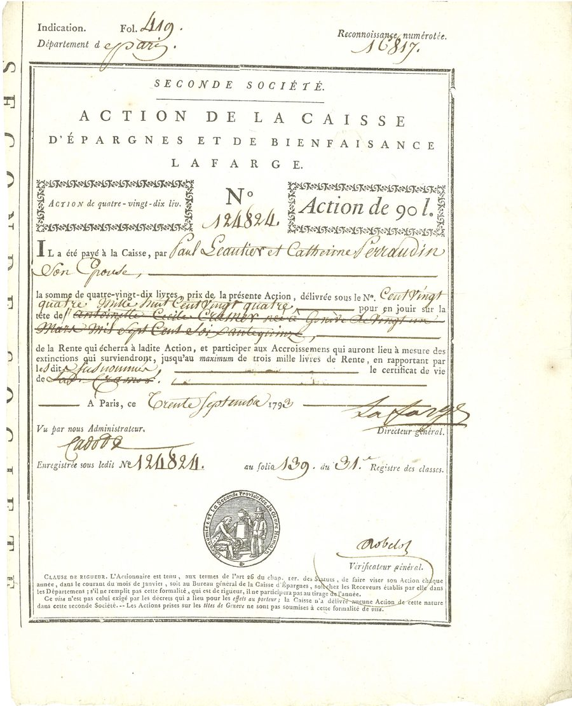
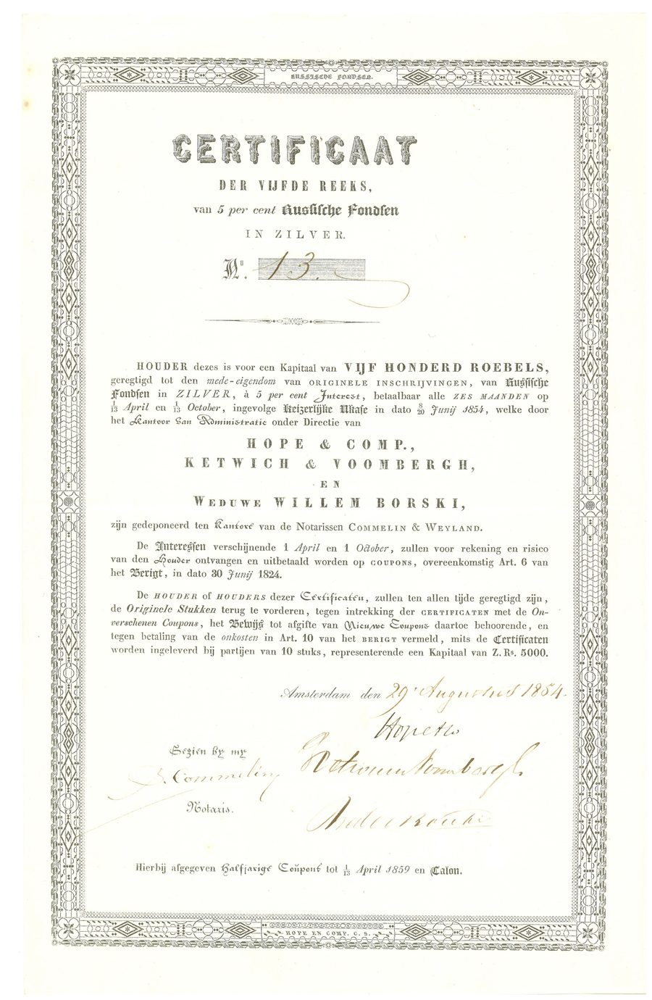
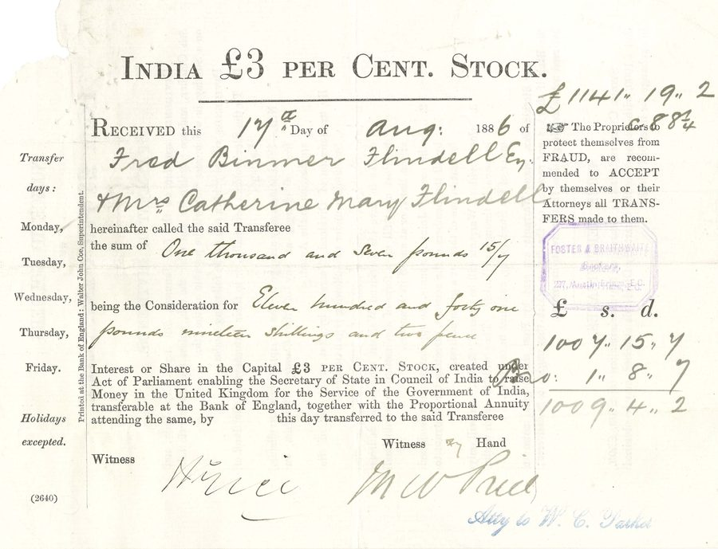
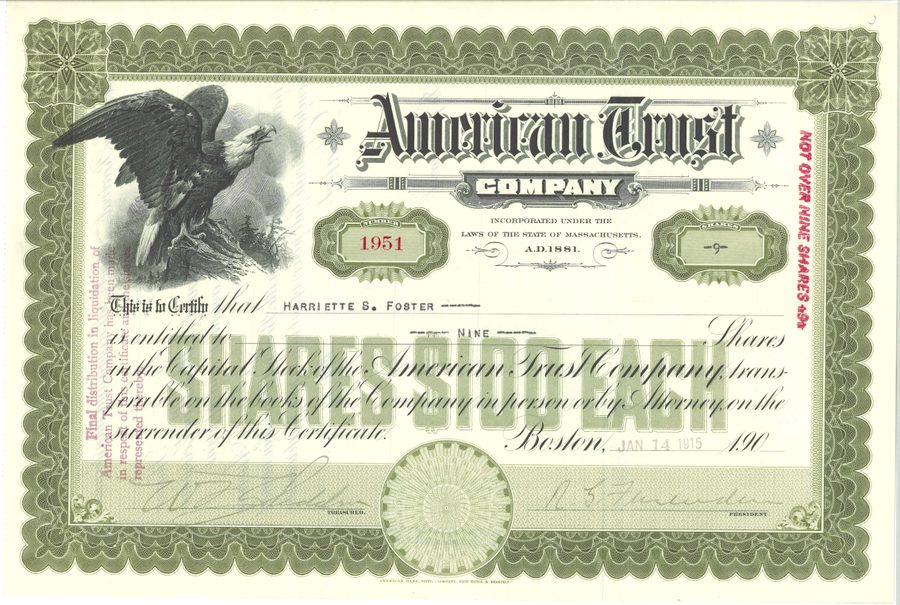

Dame Juliane Elizabeth de Guise Holler and the French East India Company
This legal authorization document from 1745 Paris concerns the sale, transfer, and remuneration of shares in the Compagnie des Indes — the French East India Company, reconstituted under Louis XV after the collapse of John Law’s Mississippi scheme. Dame Juliane Elizabeth de Guise Holler appears as a principal party, navigating the elaborate legal machinery required for women to participate in colonial share markets.
The Compagnie des Indes was one of the great commercial enterprises of the 18th century, trading with India, China, and the Indian Ocean world. That women appeared among its shareholders — and that the transfer of their holdings required formal notarial documents of this complexity — speaks to both their financial ambitions and the legal apparatus that simultaneously recognized and constrained them. Dame de Guise Holler’s name on this document is a reminder that elite women in ancien régime France were not passive observers of the financial revolution unfolding around them.

Victoire Sophie de Noailles and the Price of a Woman’s Years
Royal tontines were one of the French crown’s most ingenious borrowing mechanisms. Subscribers paid a lump sum and received annual annuities contingent on the life of a named nominee; as fellow nominees died, surviving nominees inherited their shares, concentrating income in the longest-lived. For this reason, subscribers frequently chose women as nominees — their presumed longevity made them ideal candidates to maximize the duration of payments.
This certificate names Victoire Sophie de Noailles, sixty years old and a widow, as the life on which a 200-livre subscription depends. Her age makes this a late-stage tontine holding, already decades into its run. The document records not just a financial transaction but a calculation: the price of a woman’s remaining years, expressed in livres and signed by the Garde du Trésor royal. The tontine thus occupied an ambiguous position in women’s financial history — an instrument that instrumentalized female longevity, yet one that also made widows and older women central figures in state finance.

Anne Brown and the Interest of a New Republic
This bill of exchange, dated October 9, 1778, was issued in the name of the United States to pay interest on money it had borrowed to fight the Revolutionary War. The payee named on its face is Anne Brown. Drawn at thirty days’ sight upon the Commissioners of the United States at Paris, it directs payment to her of three hundred dollars — rendered as Fifteen Hundred Livres Tournois at the stated rate of five livres to the dollar — as interest due on the nation’s Loan Office debt. It is the third bill of a set of four, and bears the signatures of Francis Hopkinson, Treasurer of Loans, and Tho. Smith, Commissioner of the Continental Loan Office for Pennsylvania.
The Continental Loan Office certificates were the American republic’s first domestic bonds, issued to fund the Revolutionary War. Unable to find specie at home, the Continental Congress serviced the interest on those certificates by drawing bills like this one on its agents in France — binding the new nation’s credit to its French alliance. Anne Brown’s bill makes her among the documented female creditors of the United States in its earliest years. That a woman’s name appears so plainly in the founding financial records of the republic reflects a practical reality: a government this short of funds could not afford to be particular about whose money it borrowed, or to whom it owed the interest.

Predominantly Women: The Dutch Negotiatie and Female Life as Financial Architecture
This subscription record from 1787 Amsterdam is among the most remarkable documents in the exhibit. Compiled before notaries as part of a Dutch negotiatie — a pooled investment vehicle — it lists nominees Nos. 30 through 59 for the Compagnie Française Lijfrente, a fund that invested in French royal life annuities. The nominees are predominantly women.
The logic was identical to the tontine: Dutch investors selected young female nominees to maximize the expected duration of annuity income. Women’s bodies were thus literally built into the financial architecture of these instruments, their life expectancy serving as the engine of investor returns. Amsterdam in the 1780s was the most sophisticated capital market in the world, and the negotiatie was one of its most innovative products — a proto-mutual fund that packaged foreign government debt for Dutch retail investors. That its entire design depended on female longevity is a fact that standard financial histories have largely passed over in silence.

Catherine Ferraudin and the Revolutionary Savings Bank
On September 30, 1798 — Year VI of the French Republic — Paul Beauttier and his wife Catherine Ferraudin paid ninety livres to the Caisse d’Épargnes et de Bienfaisance Lafarge, a private savings and charitable institution in Paris, for Action No. 124824. The share entitled Catherine Ferraudin to participate in the rentes and accroissements of the fund up to a maximum of three thousand livres of annual income, contingent on a certificat de vie — a certificate of her continued life.
The Caisse Lafarge was a tontine-style savings institution: as participants died, their shares accrued to survivors, concentrating income in those who lived longest. Like the royal tontines of the ancien régime, it was structured around female longevity — but at a different social register. Catherine Ferraudin was not a countess; the instrument was accessible to the bourgeoisie of Revolutionary Paris. The document was issued three years after the Terror and two years before Napoleon’s coup of 18 Brumaire. That a private savings institution continued to issue life-annuity shares through this period of upheaval — and that an ordinary Parisian woman’s life served as the financial unit of the instrument — speaks to the remarkable continuity of certain financial forms across political revolution. Whatever the government called itself, the market for female longevity endured.

Weduwe Willem Borski: A Widow Who Ran a Bank
This certificate, issued in Amsterdam in August 1834, is a Dutch retail instrument giving investors access to Russian government 5% silver bonds. Its co-issuers are three of Amsterdam’s leading banking houses: Hope & Company — the most powerful private bank in Europe at the time — Ketwich & Voombergh, and Weduwe Willem Borski. That last name, “Widow of Willem Borski,” was not the name of a bereaved woman managing an inheritance. It was the name of a bank.
When the Amsterdam banker Willem Borski died, his wife Maria Johanna Borski-van Strien (1756–1846) inherited the firm and continued to operate it under her name — as was the custom in Dutch banking dynasties. She ran the bank for decades, until her death at the age of ninety, and her firm co-issued Dutch retail certificates for Russian and American sovereign debt. Her name appears on this document not as an investor but as a banker: structuring, signing, and distributing financial products alongside the most prestigious houses in Amsterdam. The exhibit has traced women as nominees, annuitants, and quiet investors. In Weduwe Borski, the story takes a different turn entirely: a woman whose name was the bank itself.

Miss Mary Graham and the Quiet Investors of Victorian Britain
In August 1866, the Bank of England recorded a straightforward transaction: the transfer of £50 in Consolidated 3% Annuities — “Consols” — to Miss Mary Graham of Chester, at a consideration of £43.18.9. A modest sum, but a precise record of a single woman’s financial life. The Consols were the backbone of British public debt: safe, liquid, and widely held. For middle-class Victorian women, they were also one of the few socially respectable and legally accessible investment vehicles.
Unmarried women in England had greater legal capacity to hold property than married women, whose assets became their husband’s upon marriage under the doctrine of coverture — not substantially reformed until the Married Women’s Property Acts of 1870 and 1882. Miss Mary Graham’s receipt is a record of that quiet legal reality: a single woman, in her own name, holding a small but real share of British sovereign debt. Across the ledgers of the Bank of England, there were thousands like her.

Mrs. Catherine Mary Flindell and the Empire’s Debt
Two decades after Mary Graham’s modest transaction, Mrs. Catherine Mary Flindell and her husband Fred Binner Flindell transferred over £1,141 in India 3% Stock through the Bank of England — a considerably larger holding, and one with a distinctly imperial character. The India Stock was created by Act of Parliament to allow the Secretary of State for India to raise capital in Britain for the Government of India: in effect, British investors financing the administration of the subcontinent.
That Mrs. Flindell appears as a co-holder and named party to the transfer reflects the gradual expansion of married women’s property rights following the Married Women’s Property Act of 1882. For the first time in English law, a married woman could hold property in her own name. The transfer stamp of Foster & Braithwaite, a leading London stockbroking firm, suggests the Flindells were experienced investors. Mrs. Flindell’s presence on this document — joint, but present — marks the distance traveled since the era of coverture.

Harriette S. Foster, Shareholder in Her Own Name
This engraved capital-stock certificate of the American Trust Company of Boston certifies that Harriette S. Foster is entitled to nine shares of the company’s stock, transferable on the company’s books in person or by attorney. Issued at Boston on January 24, 1910, it is printed in green on a tinted security ground and guarded by a red diagonal overprint reading “NOT OVER NINE SHARES” — a safeguard for a small holding. A bald eagle with outspread wings, perched on a rocky crag, presides over the certificate in the manner of period American financial engraving, asserting national solidity and commercial confidence.
Harriette S. Foster’s name is written plainly on the face of the certificate as its owner — not as a nominee, not as a widow managing a deceased husband’s estate, but as a shareholder in her own right. Hers is a modest holding in a Boston trust company, one of the fiduciary institutions that pooled the savings of ordinary depositors and administered family estates across late-nineteenth- and early-twentieth-century New England. That very ordinariness is the point: by 1910 a woman could hold corporate stock in her own name as a matter of course, the shares transferable at her own direction. It is a quiet culmination of the story told across these documents: the long, uneven movement from instrument to investor.